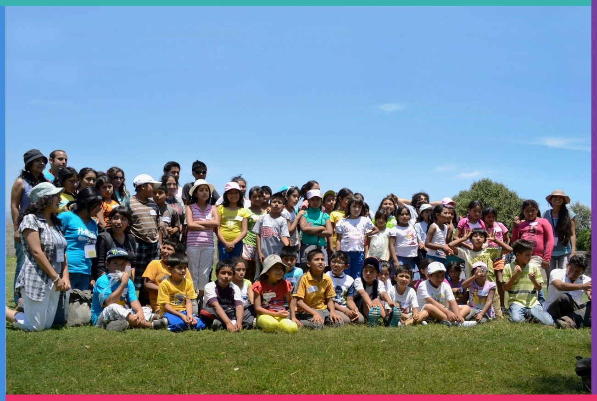

Nuestra historia
Hace varios años, tres estudiantes de la Escuela Académica Profesional de Literatura de la Universidad Nacional Mayor de San Marcos se reunieron para decidir qué acciones tomar ante una preocupación común: la carencia de una adecuada competencia lectora entre niños, niñas y adolescentes de ciertas zonas del país, especialmente de algunas zonas periféricas y/o vulnerables. Pronto, por los pasillos de la facultad ya se corría la voz de un pequeño grupo, sin nombre, sin afinidad política ni religiosa que surgía con el fin de ejecutar un pequeño proyecto durante el verano. En los próximos días, nueve personas más integrarían el equipo, dispuestos a escapar del claustro universitario para compartir sus conocimientos y trabajar de manera colaborativa y voluntaria en el distrito de Villa el Salvador.
La semilla generadora se plantó un 24 de octubre de 2011, fecha de nuestra primera reunión grupal; un espacio que sirvió para diseñar el proyecto e intercambiar experiencias. El nombre vino tiempo después, luego de una votación del grupo base: Sembrando Lectores Cosechando un Mundo Mejor. Toda una mística relacionada a la figura de la siembra y cosecha que evidenciaba las raíces de nuestros orígenes.
Nuestro primer taller se dictó en Villa el Salvador, durante el verano del 2012 en convenio con la Junta Vecinal del Sector 3, Grupo 3; ese mismo año, el Jurado Nacional de Elecciones nos reconoció como una de las diez organizaciones ganadoras del concurso nacional “Mejores prácticas ciudadanas de jóvenes”. Un reto y aliciente para continuar en la marcha. Ello permitiría que posteriormente y al paralelo, se abrieran nuevos locales de intervención en Villa María del Triunfo y San Juan de Miraflores, todos con muy buenos resultados y el deseo de la comunidad por continuar con este tipo de actividades.
En el año 2014, el perfil de los nuevos miembros voluntarios era diferente. Nuestro equipo superaba los treinta miembros, entre estudiantes y egresados de diversas carreras profesionales: Literatura, Educación, Psicología, Bibliotecología, Etc. Los objetivos iban más allá de la animación lectora y el concepto de “lectura” rebasaba la simple decodificación de palabras. Nuevas actividades surgieron, nuevos espacios de impacto, alianzas estratégicas y los deseos de formalizarnos. Dos años más tuvieron que pasar para que esta agrupación se consolidara como una Asociación Civil sin fines de lucro compuesta por diecinueve miembros asociados fundadores y más de veinte miembros voluntarios adjuntos.
Hoy continuamos sembrando y la cosecha la recogemos en nuestro día a día, satisfechos de demostrar que cualquier iniciativa independiente, con trabajo colaborativo y seres humanos nobles, siempre alcanzará el éxito. Lo que hacemos solo es parte de nuestra responsabilidad social como profesionales.
